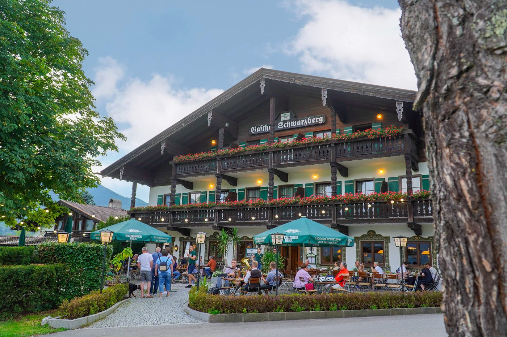
Landgasthof · Biergarten · Hotel
Dort, wo der Chiemgau die Alpen küsst.
Bayerischer Biergarten unter drei alten Kastanien, Gaststube mit Kachelofen und komplett neu renovierte Zimmer – am Ortsrand von Inzell, mitten im Chiemgau. Hunde und Biker sind herzlich willkommen.
20 Zimmer vom Einzelzimmer bis zur Ferienwohnung · Frühstück inklusive · Preise auf Anfrage
Bier, Brezn und Kastanien
Der Biergarten ist das Herz des Schwarzberg: rund 200 Plätze im Schatten von drei alten Kastanienbäumen, mit Blick über das gesamte Inzeller Tal auf die Chiemgauer Alpen. Dazu ein kühles Helles oder ein frisches Hefeweizen der Hausbrauerei Wieninger – und bei schönem Wetter spielen in den warmen Monaten Musikgruppen auf, mal traditionell bayerisch, mal ein bisschen moderner.
- Plätze
- Rund 200, unter drei alten Kastanienbäumen
- Bier
- Helles und Hefeweizen der Hausbrauerei Wieninger
- Blick
- Über das Inzeller Tal auf die Chiemgauer Alpen
- Livemusik
- In den warmen Monaten, traditionell bis modern
- Brotzeit
- Von der Schweinshaxe bis zu Kaffee und Kuchen
«Der angenehme Schatten uralter Kastanien, ein kühles Bier oder ein frisches Hefeweizen unserer Hausbrauerei Wieninger und ein unvergleichlicher Ausblick auf das gesamte Inzeller Tal.»
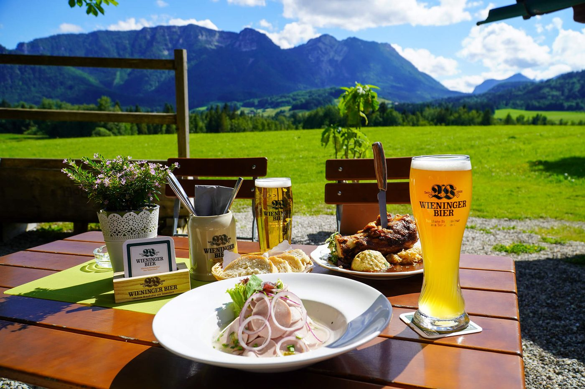
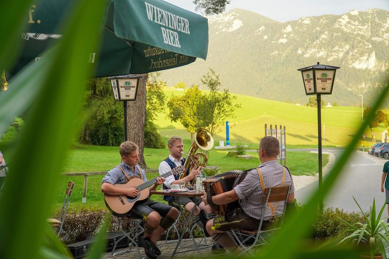
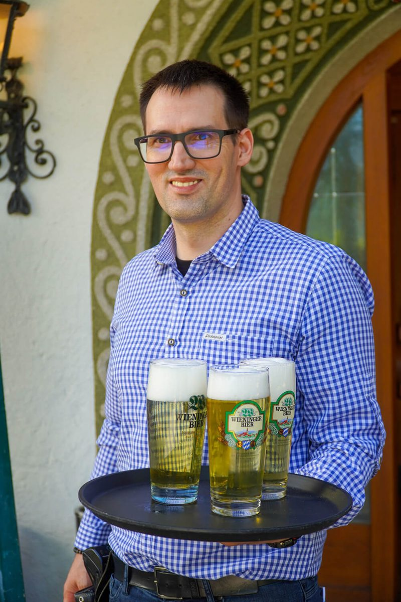
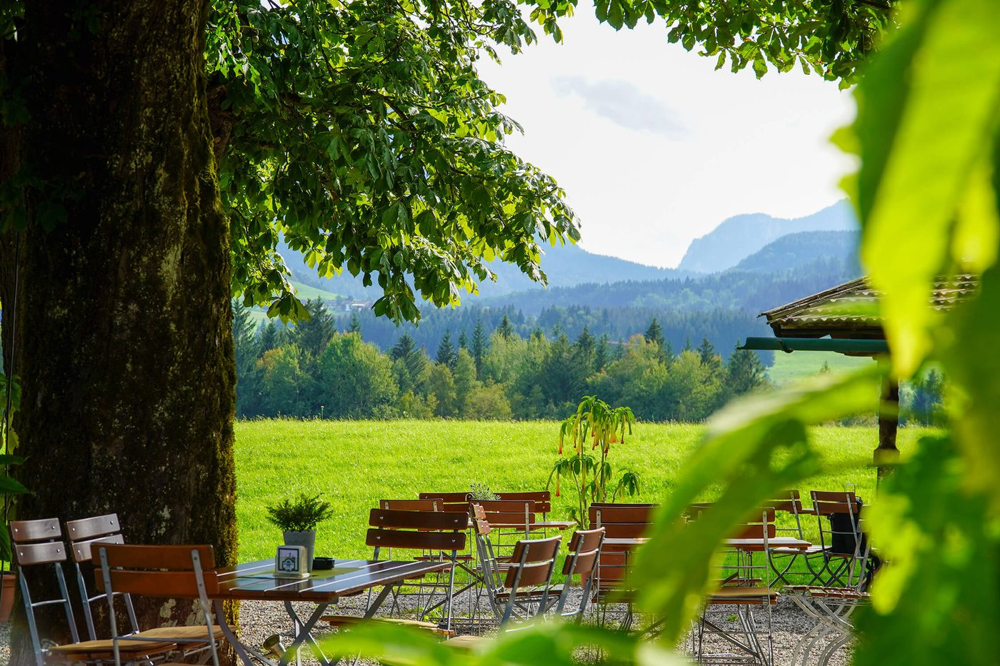
Gaststube
- Plätze
- Rund 140, mit viel Holz und gemütlichem Kachelofen
- Küche
- Regional bayerisch, mit Einflüssen aus dem benachbarten Tirol
- Frühstück
- Reichhaltig – für Hausgäste inklusive
- Feiern
- Hochzeit, Geburtstag oder Jubiläum bis 50 Gäste – das Haus hilft bei der Planung
Aus der Küche
- Schweinshaxe
- Ofenfrisch – nicht nur am Sonntag
- Salate
- Bunte Variationen im Dunkelbierdressing an gebackener Weißwurst
- Forelle
- Heimisch, aus den Bächen der Region
- Süßes
- Apfelstrudel, Kaffee und Kuchen am Nachmittag
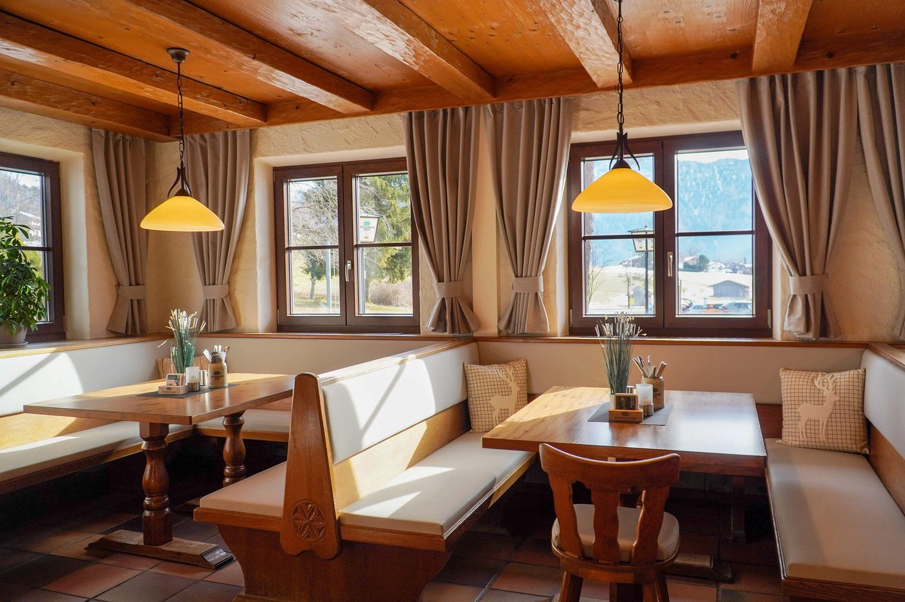
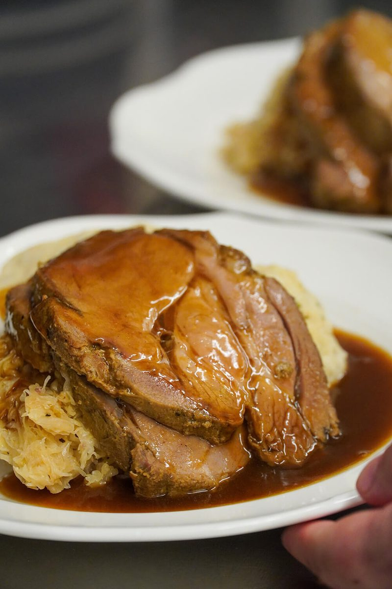
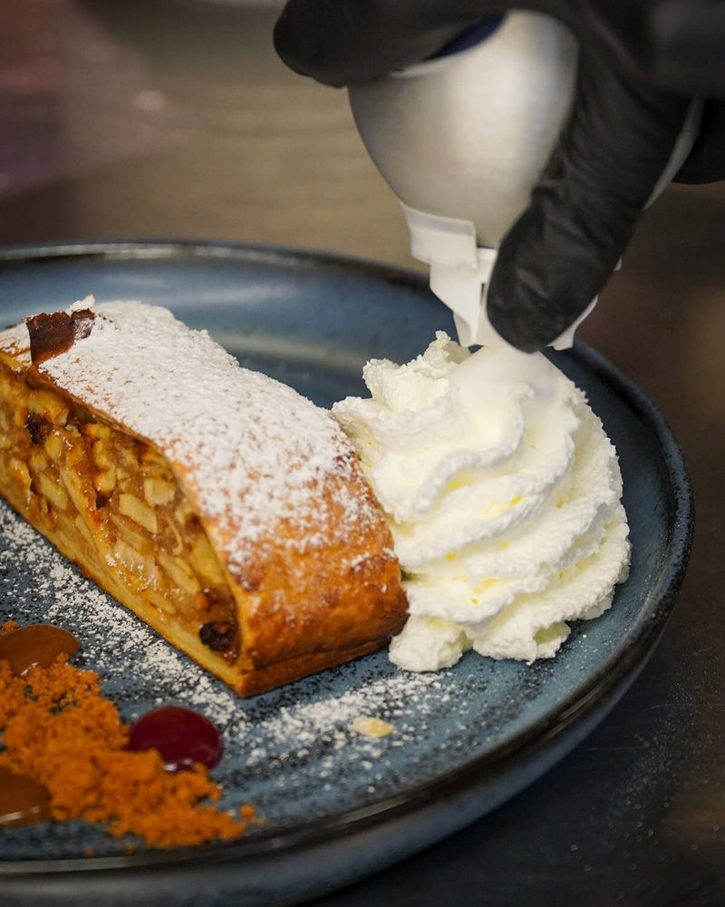
Gaststube mit Kachelofen
Das mit viel Holz eingerichtete Restaurant hat rund 140 Sitzplätze und einen gemütlichen Kachelofen. Die Küche ist regional bayerisch mit Einflüssen aus dem benachbarten Tirol; das Frühstück ist für Hausgäste inklusive. In der Gaststube gibt es übrigens auch kostenloses WLAN – und wer feiern möchte, findet hier den Rahmen für bis zu 50 Gäste.
«Von ofenfrischer Schweinshaxe über den klassischen Wurstsalat zur heimischen Forelle, bis zum Kaffee und Kuchen – die ganze Bandbreite lokaler und internationaler Biergartenspezialitäten.»
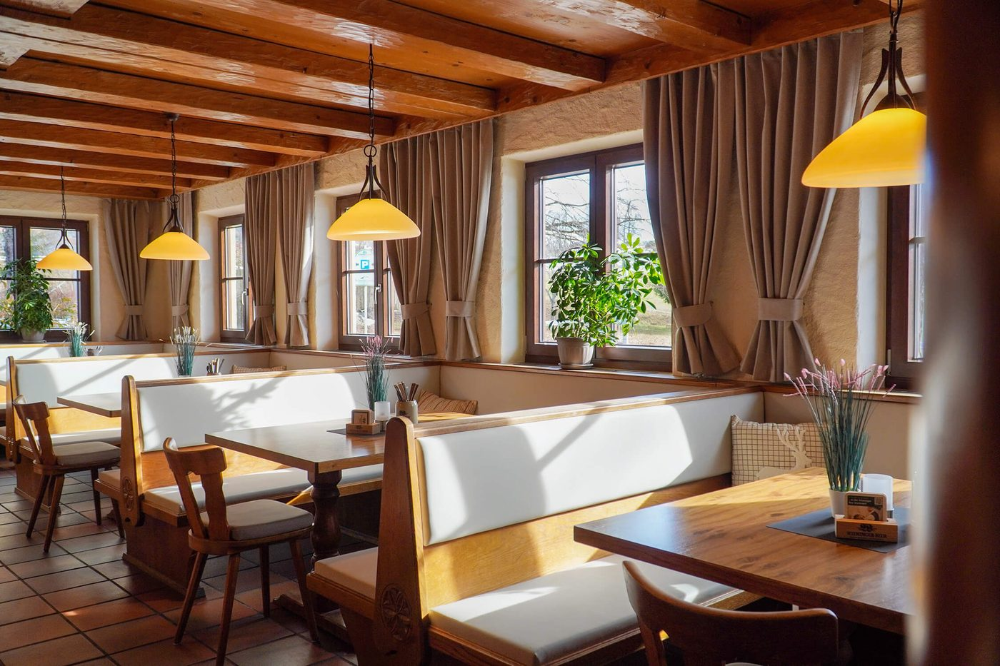
Zimmer
Alle Zimmer sind komplett neu renoviert, mit modernem Bad, Smart TV und kostenlosem WLAN. Frühstück inklusive, Hunde herzlich willkommen. Die Preise bestätigt das Haus auf Anfrage.
| Kategorie | Belegung | Preis pro Nacht | Auswahl |
|---|---|---|---|
| Standard EinzelzimmerKomplett neu renoviert, Bad mit Dusche/WC, TV | 1 Person | auf Anfrageinkl. Frühstück | |
| Standard & Deluxe DoppelzimmerModernes Bad, Smart TV, einige mit Balkon | 2 Personen | auf Anfrageinkl. Frühstück | |
| Superior DoppelzimmerMit Balkon oder Terrasse und Bergblick | 2 Personen | auf Anfrageinkl. Frühstück | |
| 3-Bett-ZimmerFranzösisches Bett und Einzelbett; Superior-Variante mit Balkon und Bergblick | bis 3 Personen | auf Anfrageinkl. Frühstück | |
| FamilienzimmerZweiräumig, mit kleinem Kühlschrank; auf Wunsch mit Terrasse | bis 4 Personen | auf Anfrageinkl. Frühstück | |
| Ferienwohnung2 Schlafzimmer, Küche, Waschmaschine, Terrasse und Balkon mit Bergblick; ab 3 Nächten | bis 6 Personen | auf AnfrageKinder unter 5 kostenlos |
Zimmerbeschreibungen laut schwarzberg.de, Stand 24.11.2026. Das Haus veröffentlicht keine Preisliste – Preis und Verfügbarkeit bestätigt es mit der Antwort auf Ihre Anfrage.
8,5von 10 im KAYAK-Schnitt aus 1251 Bewertungen; Booking.com: 8,5 bei 781 Bewertungen (beides abgerufen 24.11.2026)
Häufig gelobt in den Bewertungen: das freundliche Personal, das Frühstück, die sauberen, neu renovierten Zimmer und die Lage.
Neu eröffnet: die private Sauna
Der neu eröffnete Saunabereich gehört für drei Stunden Ihnen allein – mit Vitalsnacks, Tee und Wasser, alkoholfreien Bieren und geliehenen Handtüchern, Bademantel und Badeslippern. Die Rezeption informiert gern über freie Zeiten.
- Privat
- Alleinige Nutzung für 3 Stunden, für 2 bis 4 Personen
- Inklusive
- Vitalsnacks, Tee und Wasser, alkoholfreie Biere, Handtücher, Bademantel, Badeslipper
- Preis
- 78 € für 2 Personen; 3. und 4. Gast je 20 €
- Extras
- Sauna-Aufguss gegen Aufpreis; Sekt oder alkoholfreier Prosecco 25 €
- Öffnungszeiten
- Täglich 7.00–22.00 Uhr, Reservierung über die Rezeption
«Nehmen Sie ein wenig Zeit für sich – verwöhnen Sie sich in unserem neu eröffneten Saunabereich.»
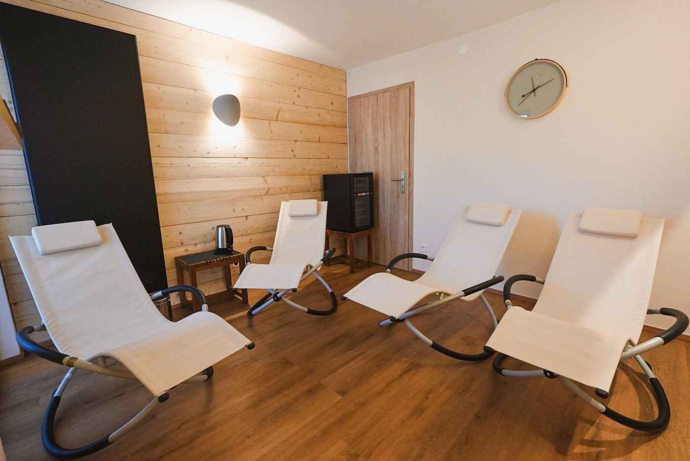
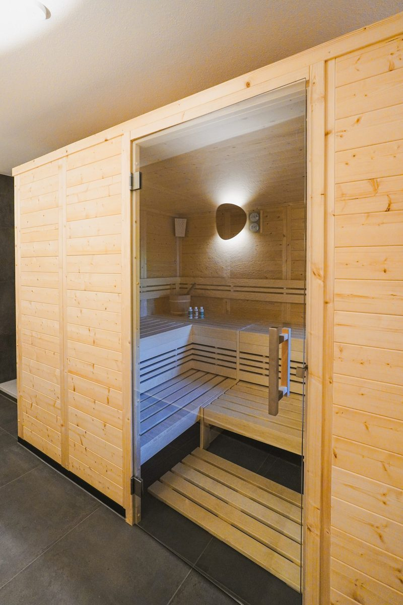
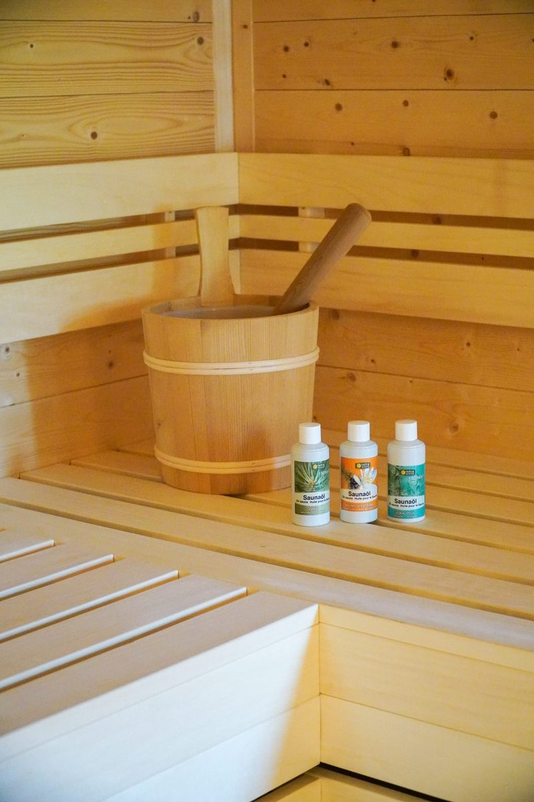
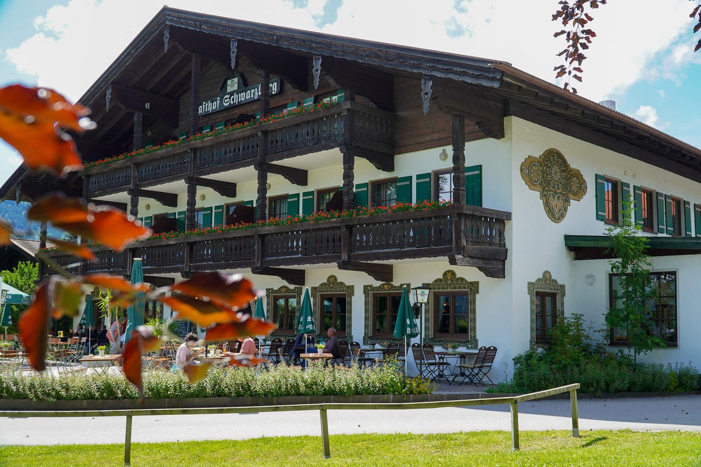
Biker willkommen
Inzell liegt an der Deutschen Alpenstraße, und der Schwarzberg ist im Chiemgau als Motorradhotel gelistet. Nach dem Fahrtag: Maschine in Sichtweite abstellen, in der Sauna aufwärmen, im Biergarten einkehren.
- B305
- Die Deutsche Alpenstraße führt durch Inzell – kurvenreich weiter Richtung Ruhpolding und Berchtesgaden.
- Parken
- Kostenlose Parkplätze direkt am Haus – das Motorrad bleibt in Sichtweite.
- Sauna
- Die private Sauna hilft nach langen Fahrtagen bei der Erholung.
- Touren
- Chiemsee und die oberbayerischen Seen, Salzburger Land, Großer Ahornboden im Karwendel.
- Gelistet
- Mit eigenem Profil als Motorradhotel auf motorradundreisen.de.
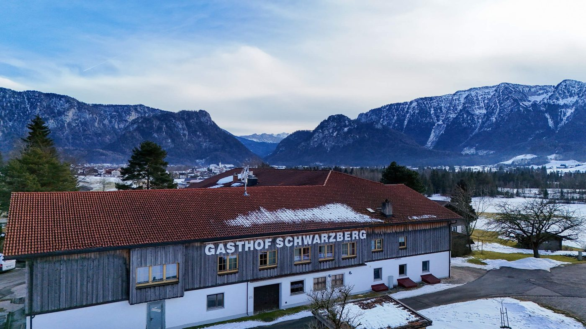
Inzell, Chiemgau, Alpen
Im Sommer gehören der Naturbadesee, die Radwege durch das flache Tal und die Kalorienpromenade zu Inzell; im Winter sind es mehr als 40 Kilometer geräumte Winterwege und über 35 Kilometer Loipen – der Einstieg in die Filzenloipe liegt nur wenige Schritte vom Haus. Die Naturrodelbahn zum Forsthaus Adlgaß ist 600 Meter lang, donnerstags und sonntags mit Flutlicht.
Eisschnelllauf und Biathlon: Die Max-Aicher-Arena in Inzell ist 3,4 km entfernt, die Chiemgau Arena in Ruhpolding rund 16 km.
| Entfernungen (Fahrstrecke, eigene Messung über OpenStreetMap) | Distanz |
|---|---|
| Ortszentrum Inzell | 2,2 km |
| Badepark Inzell | 2,4 km |
| Max-Aicher-Arena | 3,4 km |
| Bahnhof Traunstein | 16 km |
| Chiemgau Arena Ruhpolding | 16 km |
| Chiemsee | 24 km |
| Flughafen Salzburg | 41 km |
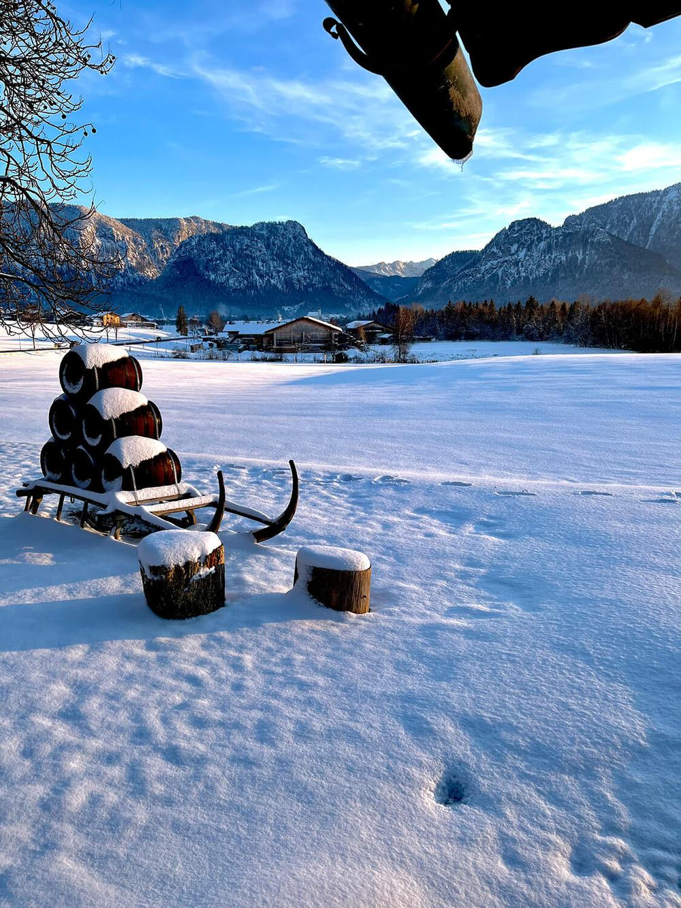
Anreise
- Adresse
- Landgasthof Schwarzberg · Traunsteiner Str. 95 · 83334 Inzell · Deutschland
- Mit dem Auto
- Von der A8 (Ausfahrt Traunstein/Siegsdorf) über die B306 Richtung Inzell; das Haus liegt an der Traunsteiner Straße am Ortsrand. Kostenlose Parkplätze am Haus.
- Mit der Bahn
- Der nächste Bahnhof ist Traunstein, rund 16 km entfernt; weiter mit dem Bus Richtung Inzell oder mit dem Taxi.
- Check-in / Check-out
- Check-in ab 15 Uhr, Check-out bis 10 Uhr (laut Booking.com/KAYAK, 24.11.2026)
- Kontakt
- +49 8665 7565 · +49 170 979 1828 · info@schwarzberg.de · schwarzberg.de
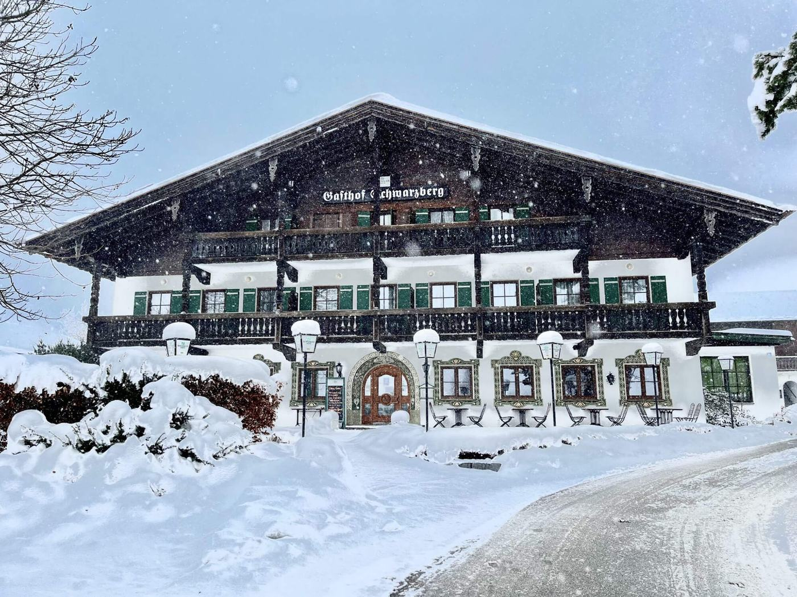